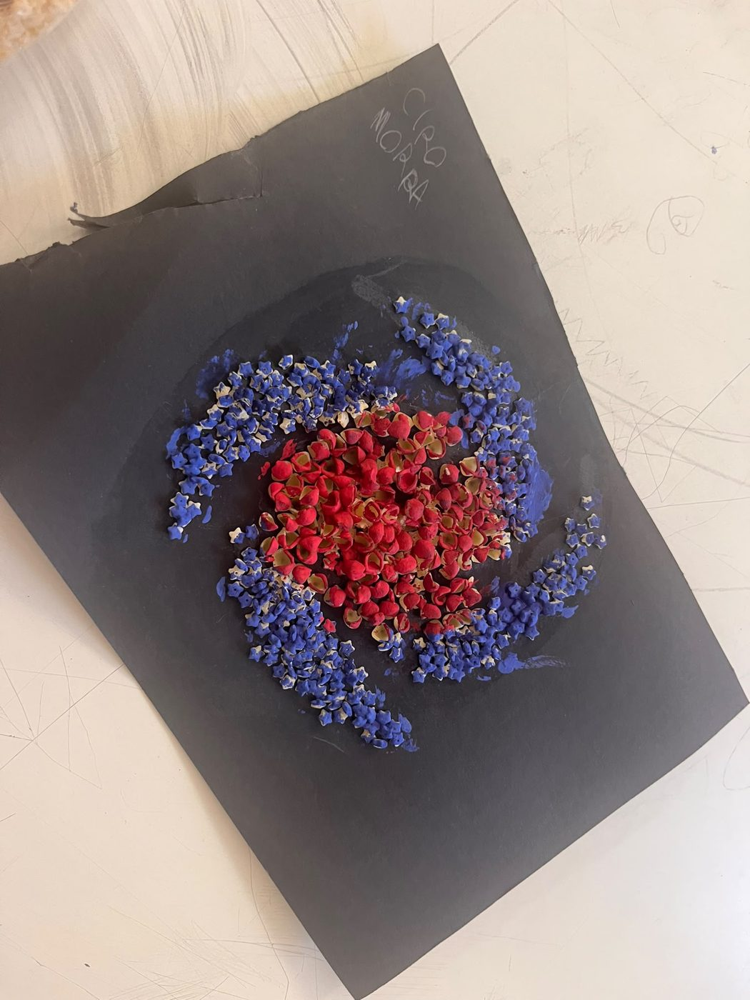
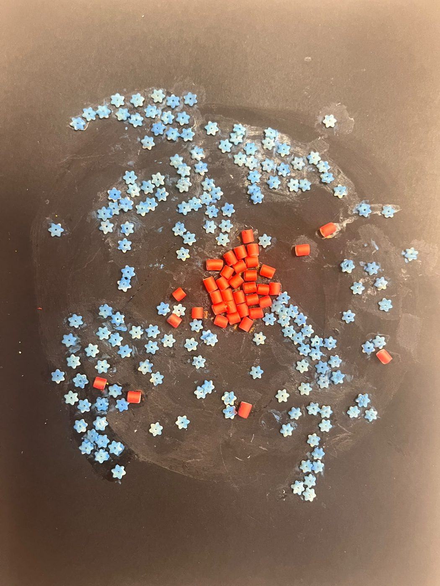

Orologio solare
Orientato verso nord, lo gnomone proietta un'ombra sulla scala graduata e indica l'ora.
Scuola · Giugno 2026
Un laboratorio di astronomia di 30 ore per una scuola secondaria di primo grado di Napoli. I ragazzi hanno scoperto il cielo alternando teoria, simulazioni al computer e modelli costruiti con le proprie mani.

StellariumLab è un progetto extracurricolare che ho ideato e condotto come esperto per Paidea S.a.s., l'ente che lo ha realizzato per l'Istituto Comprensivo Statale Don Giustino Russolillo di Napoli. L'approccio è laboratoriale: momenti di teoria, strumenti digitali e modelli da costruire si alternano in ogni incontro.
Il software di planetario Stellarium ha aiutato i ragazzi a capire il moto apparente degli astri e le configurazioni del cielo. Con Scratch hanno simulato fenomeni come le fasi lunari. Costruire i modelli ha reso visibili fenomeni difficili da capire con la sola spiegazione, e ha allenato osservazione, problem solving, manualità e lavoro di gruppo.
I principali ambiti di studio della disciplina e i primi passi con Stellarium.
Come funzionano orologio solare e astrolabio, con la costruzione di modelli funzionanti.
Fasi lunari ed eclissi con modelli 3D, simulazioni in Stellarium e Scratch.
La loro natura apparente, con modelli in scala e un teatro delle ombre.
Pianeti, esopianeti e metodo dei transiti, la tecnica della ricerca di oggi.
Le principali tipologie di galassie, rappresentate con modelli costruiti dai ragazzi.
Ogni studente ha realizzato la propria copia di ciascun prodotto e l'ha portata a casa.
Orientato verso nord, lo gnomone proietta un'ombra sulla scala graduata e indica l'ora.
Rappresenta una porzione di cielo e ne simula il moto: dice quali stelle si vedono in un certo momento.
Mostra come cambiano le fasi lunari con la posizione della Luna, e perché le eclissi sono rare.
Le fasi crescenti e calanti, dalla luna nuova alla luna piena e ritorno.
Proietta l'immagine del Sole su carta da forno, per osservarlo senza danni agli occhi, anche durante l'eclissi del 12 agosto 2026.
Stelle a diverse altezze: viste dall'alto formano il Cigno, a dimostrare che le costellazioni sono un effetto di prospettiva.
In controluce mostra Cassiopea da diverse angolazioni e il metodo dei transiti per scoprire gli esopianeti.
Stelle blu giovani e rosse vecchie su un foglio curvato, che rappresenta l'effetto della materia oscura.
